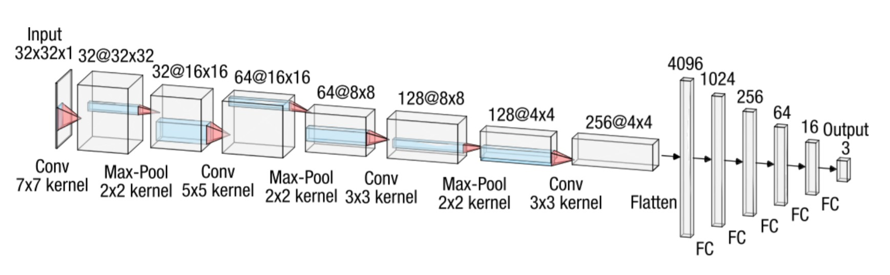
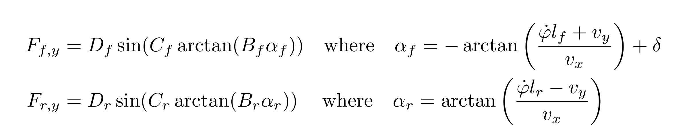
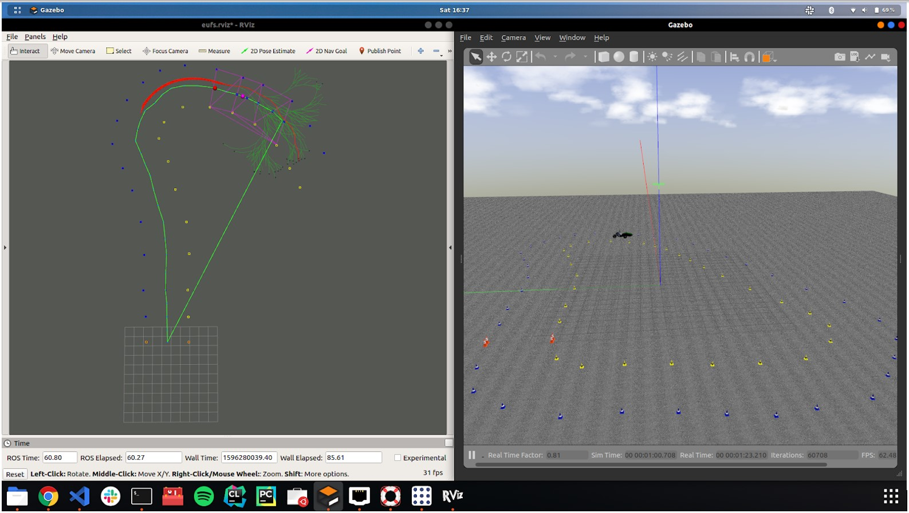

DJS Racing
I currently lead the driverless project at DJS Racing, a student team aiming to build a self-driving Formula Student race car.
Here’s a small video from 2019 about our work prior to building driverless and electric cars:
Although we’ve been working remotely most of the times for the past one and half years, we’re on our way to finish building our next car by February 2022.
DJS Racing Driverless

At DJS Racing, the Formula Student Team of Dwarkadas J. Sanghvi College of Engineering, we are building one of the first driverless Formula Student race-car of India. The team will use the software system presented below for the Formula Student Driverless competition (postponed due to the outbreak of COVID-19).
About Formula Student Driverless
Formula Student Driverless(FSD) is the world's largest autonomous racing competition, held annually in Hockenheim, Germany, in which multidisciplinary student teams compete with self-developed driverless racecars every year. In this competition, each team has to race their autonomous car across 5 disciplines - Acceleration, Skidpad, Autocross, and Trackdrive. In the main event, called Trackdrive, a car has to complete 10 laps on an unknown track autonomously as fast as possible against the clock. The track is defined by a set of traffic cones, blue cones on the left and yellow cones on the right-hand side[27].
Track Layout

In this blog, I am going to introduce to you the overall implementation of a Formula Student Driverless race-car by DJS Racing, India. The race-car can drive autonomously on unknown tracks and switch to Model Predictive Control after track exploration, mapping, and loop-closure detection in the first lap.
Software Architecture
We chose the Robot Operating System as our primary framework for software development. In order to run the MPC algorithm at its full potential, the track must be known at least 2s in advance for a speed of 85 kmph. With the current perception setup, it is not possible to achieve accurate mapping of the environment with a 40m (at 85 kmph) of look-ahead. Hence, we need to drive the first lap, exploring the track using a geometric controller such as the Pure Pursuit Controller[23][28] at a lower speed. After successful mapping and exploration of the track, the car switches to the more performant Model Predictve Control(MPC) for the subsequent laps to race as fast as possible. From this, we can define two modes of our system operation, SLAM mode, and localization mode. To count the number of laps and to detect loop closure, high-level mission planning is done using a finite state machine. This state machine guides to the system to switch between SLAM and localization mode and signals whether the race has finished. Interfacing between the onboard Jetson AGX Xavier and the STM32 is done using the ros-serial package. The STM32 runs FreeRTOS to achieve real-time control of actuators.
System Overview

High-level Architecture
3D Perception
The goal of the perception system is to detect traffic cones in the vicinity of the car and determine their color and 3D coordinates in real-time. These cone detections will be then fed as landmarks to the SLAM node to build a map of the track. The perception system takes input from multiple sensors - a mono camera, stereo camera, and a 3D LiDAR. The Basler Ace 2 industrial camera was chosen for our self-developed mono and stereo camera setups.
Multiple sources of visual information are chosen so as to increase the redundancy[22] in the system and to perceive the environment reliably as only one chance is given for the trackdrive race.
LiDAR 3D Object Dectection
3D Traffic Cone Detection and Color Estimation using LiDAR Data
The point cloud obtained from the LiDAR is first segmented and the ground and out-of-track planes are removed. Afterwards, Euclidean clustering is run on the point cloud to cluster cone patches. The centroid of these cone patches is used to determine the 3D coordinates for each cone. They are further projected on to a 2D plane from the LiDAR frame so as to obtain a 32x32 image. A state-of-the-art CNN[4] is then run on these image patches to estimate the color for each cone.
These clusters are also passed through a rule-based outlier filter to remove false cones in the map.
CNN Architecture for Color Estimation using LiDAR Intensity Patterns

Stereo 3D Object Dectection
In order to ensure redundancy in the system, an additional camera-based object detection pipeline is added to the system.
We have chosen an off-the-shelf object detector, YOLOv3[17] for object detection for real-time performance.
Stereo Object Detection Pipeline
YOLOv3 running on mock cones
Stereo feature matching is then performed using the Semi-Global Block Matching[32] (SGBM) algorithm to obtain the disparity map and 3D coordinates of the traffic cones.
3D point cloud obtained after occlusion reduction in the disparity map

Monocular 3D Object Detection
Monocular 3D Object Detection is performed using the Perspective 7-Point transformation with the PnP RANSAC algorithm[1]. This is considering the fact that we know the exact physical dimensions of each cone. The keypoints[21] are then used to transform 2D image coordinates to 3D world coordinates. Keypoints for each cone image patch are obtained using the RektNet CNN architecture by MIT Driverless (Accurate, Low-Latency Visual Perception for Autonomous Racing:Challenges, Mechanisms, and Practical Solutions. Kieran Strobel et al., 2020).
Stereo Object Detection Pipeline
Occlusion of background cones is handled by outlier filtering.
Pose/Velocity Estimation and Simultaneous Localization and Mapping
The extended Kalman Filter was chosen as an estimator for mildly non-linear systems with white Gaussian noise. Our main task here is to fuse data from an Inertial Measurement Unit (SBG Ellipse N), 4 wheel encoders, steering angle sensor, and a dual GPS system in a moving baseline configuration. EKF is also computationally more efficient than the Unscented Kalman Filter[20] and allows us to estimate the state at 200 Hz. Here, the effects of lateral load transfer are ignored and the track is assumed to be a flat 2D surface.
State Estimation Pipeline
We consider that our system model is a constant velocity model (CTRV)[2], the jerk is assumed to be zero in this case and acceleration is used as a pseudo input to the system.
The wheel encoders along with the steering angle potentiometer are used to estimate the slip ratios of the vehicle.
The 6-DOF state vector is taken as
Where p, θ, v are the position (along x and y), angular velocity, and the linear velocity (along x and y in car frame) of the car respectively.
The process model is taken as

Where a is the linear acceleration measured by the IMU and R(θ) is the rotation matrix between the sensor frame and the vehicle frame.
The sensor model is

Where θs is the sensor heading in the body frame and n{.} are additive Gaussian white noises that corrupt the measurements.
Different sensors work at different rates and the accuracy also varies between the sensors. Hence, we use multiple update functions for each sensor and we update our beliefs asynchronously[26]. Here, the acceleration is taken from the IMU, angular velocity from the Gyroscope, and velocities from GPS and wheel encoders. Sensor drift and failure is detected with the help of Chi-Squared test[7].

If the value of Chi falls below a certain threshold, the measurement is ignored.
Design of an Autonomous Racecar: Perception, State Estimation and System Integration (Valls et al., 2018)
The landmark-based FastSLAM[8][15] algorithm was chosen for its robustness because of multiple-hypothesis and proposal sampling[3][31]. FastSLAM is computationally much more efficient with N.log(N) time complexity as compared to EKF SLAM with a quadratic complexity [19]. FastSLAM is also much more tunable owing to the fact that it uses a Rao-Backwellized particle filter to express pose estimates. We can simply tune the number of particles to adjust the runtime performance. Data association is done by comparing the mahalanobis distance between an observation and each landmark on the map.
Our SLAM pipeline runs at 15 Hz to accommodate for the perception pipeline operation rate. The pose estimates from the SLAM node are then integrated by the velocity with time by the velocity estimation node to provide fast pose updates at 200 Hz for the control algorithm. This ensures that the MPC node always receives the latest pose estimates.
Path Planning
RRT + Delaunay Triangulation for Waypoints Generation
We chose the Randomly Exploring Random Trees[24][25] as our path planning algorithms. Formula Student poses a unique challenge to path planning as there is no definite goal, and we just have to drive straight. Hence, in order to determine the best path, we have proposed a cost function that is assigned to each node. The tree branch with the lowest cost is then chosen as our desired path.
J = Q_delta * delta^2 + Q_theta * theta^2 + Q_cte * cte^2 - Q_cone * cone_count^2
Where,
- delta: Angular deviation between two nodes. Avoids sharp turns.
- theta: Discounted heading. Tree pointing backward to the car are penalized.
- cte: Distance between the path and track boundary. Penalizes branches too close to the boundaries.
- cone_count: Count of cones on both sides of the path. Penalizes shorter paths.
The cost is then normalized between 0 and 1 to determine the best path.
However, this is not the appropriate approach to path planning in FSD, as we need to have a continous and smooth trajectory in order to ensure that we are driving close to the limits of handling. Hence, we have an additional step of running Delaunay triangulation[13] on nearby cone positions. The intersection points of the best tree branch and the traingulation segments are then taken as the waypoints for the control algorithm.
The waypoints that are generated are depicted as blue dots along the track center-line.
Model Predictive Control
After finishing the first lap using the PID and Pure Pursuit Controller, loop closure is detected and the SLAM algorithm switches to localization mode. This is all handled by the mission planning node. After track exploration and mapping, we switch to Model Predictve Control[18] as our control method to finish the race as fast as possible at the limits of handling in real-time.
The goal of the optimization problem is to drive the car along the reference path, following imposed contraints and targeting the desired velocity. The state dynamics is considered as a bicycle model with actuator and drivetrain models along with tire forces.
Dynamic Bicycle Model
We consider the dynamic bicycle model for vehicle dynamics[9][14] with non-linear magic tire formula models[16].

Vehicle Dynamics
Where X, Y is the position and is the orientation of the car in the world frame. Vx, Vy, and œâ are the linear and angular velocities of the car in the body frame respectively. ùõø is the steering angle, Lf and Lr are the length from the front and rear axles to the center-of-gravity respectively and Iz is the inertia moment.</i>
Tire Model


Here D, C, B are coefficients obtained from the Pacejka tire model. d is the driving command (acceleration), Cr is the rolling resistance, αf, r are tire slip angles, and Cd is the drag coefficient. m is the mass of the vehicle.
State Input
The lateral and cross-track errors are defined as
cte` = cte - v * sin(epsi) * dt
epsi` = epsi + v / Lf * (-delta) * dt
And hence, the cost function is defined as
J = Q_cte * cte^2 + Q_epsi * epsi^2 + Q_v * (v - vmax)^2 + Q_delta * delta^2
+ Q_a * a^2 + F * (a` - a)^2 + Q_ddelta * (delta` - delta)^2
The objective of this optimization problem is to drive the vehicle as close as possible to the track center line, with heading along the track direction. Rapid changes in the state inputs, as well as linear and angular velocities, are penalized.

The optimization problem is then solved directly using the IPOPT non-linear optimization library[6] in a receding horizon fashion for over 15 steps for a horizon of 1.5 secs. There is an approximately 100 ms delay between computed command and actuation, hence we choose an actuator vector in the future (about 100 ms in the future) to compensate for mechanical delays.
However, an improvement is required here as IPOPT is not designed for real-time systems and considerably slows down with an increase in sequence size[30]. Hence, we need to use a convex optimization library such as HPIPM[29].
Simulation and CI/CD Infrastructure
Simulation Environment Designed with Gazebo[12] and Ignition Libraries

ROS Bags from GitHub Pull Requests and actual car races can be visualized in the app

The FSSIM [4] simulation framework by AMZ Driverless has been used for the codebase. The FSSIM simulator employs a Gazebo plugin that uses a basic vehicle model which is discretized with Euler Forward discretization to achieve 99% of real-world performance. The simulation framework, on every pull request, runs the codebase and important ROS topics are recorded into ROS Bags and uploaded to the server. Each ROS Bag is played on the remote server and the run is recorded using VirtualGL, the videos are then stored in a NoSQL database for backup and querying. The client app can establish a remote database connection to visualize the ROS Bags. The server automatically replays the bag file and stores the recorded videos. To ensure software reliability, each pull request is first compiled using GitHub Actions and run on our CI server hosted on AWS. Only after all checks have passed and the simulation runs without any issues, a pull request can be merged.
References
- Kieran Strobel and Sibo Zhu and Raphael Chang and Skanda Koppula. Accurate, Low-Latency Visual Perception for Autonomous Racing:Challenges, Mechanisms, and Practical Solutions. 2020. arXiv:2007.13971
- de la Iglesia Valls, M., Hendrikx, H. F. C., Reijgwart, V. J. F., Meier, F. V., Sa, I., Dub´e, R., Gawel, A., B¨urki, M., and Siegwart, R. (2018). Design of an autonomous racecar: Perception, state estimation and system integration. 2018 IEEE International Conference on Robotics and Automation (ICRA).
- Dellaert, F., Fox, D., Burgard, W., and Thrun, S. (1999). Monte carlo localization for mobile robots. In IEEE International Conference on Robotics and Automation (ICRA99).
- Juraj Kabzan and Miguel de la Iglesia Valls and Victor Reijgwart and Hubertus Franciscus Cornelis Hendrikx and Claas Ehmke and Manish Prajapat and Andreas Bühler and Nikhil Gosala and Mehak Gupta and Ramya Sivanesan and Ankit Dhall and Eugenio Chisari and Napat Karnchanachari and Sonja Brits and Manuel Dangel and Inkyu Sa and Renaud Dubé and Abel Gawel and Mark Pfeiffer and Alexander Liniger and John Lygeros and Roland Siegwart. AMZ Driverless: The Full Autonomous Racing System. 2019. arXiv:1905.05150.
- Dhall, A., Dai, D., and Van Gool, L. (2019). Real-time 3D Traffic Cone Detection for Autonomous Driving. arXiv e-prints, page arXiv:1902.02394.
- Wächter, A., Biegler, L. On the implementation of an interior-point filter line-search algorithm for large-scale nonlinear programming. Math. Program. 106, 25–57 (2006). https://doi.org/10.1007/s10107-004-0559-y.
- B. D. Brumback and M. Srinath, “A chi-square test for fault-detection in kalman filters,” Automatic Control, IEEE Transactions on, vol. 32, pp. 552 – 554, 07 1987.
- M. Montemerlo, S. Thrun, D. Koller, B. Wegbreit, et al., “Fastslam: A factored solution to the simultaneous localization and mapping problem,” in Aaai/iaai, pp. 593–598, 2002.
- Kong, Jason, et al. "Kinematic and dynamic vehicle models for autonomous driving control design." 2015 IEEE Intelligent Vehicles Symposium (IV). IEEE, 2015.
- Yoon, Jong-Hwa, and Huei Peng. "A cost-effective sideslip estimation method using velocity measurements from two GPS receivers." IEEE Transactions on Vehicular Technology 63.6 (2013): 2589-2599.
- Klomp, M., Olsson, K., and Sandberg, C. (2014). Non-linear steering control for limit handling conditions using preview path curvature. International Journal of Vehicle Autonomous Systems, 12(3):266–283.
- Koenig, N. and Howard, A. (2004). Design and use paradigms for gazebo, an open-source multi-robot simulator. In Intelligent Robots and Systems, 2004.(IROS 2004). Proceedings. 2004 IEEE/RSJ International Conference on, volume 3, pages 2149–2154. IEEE.
- Lee and Schachter (1980). Two algorithms for constructing a delaunay triangulation. International Journal of Computer and Information Sciences.
- Milliken, W., Milliken, D., and of Automotive Engineers, S. (1995). Race Car Vehicle Dynamics. Premiere Series. SAE International.
- Montemerlo, M., Thrun, S., Koller, D., and Wegbreit, B. (2003). FastSLAM 2.0 : An Improved Particle Filtering Algorithm for Simultaneous Localization and Mapping that Provably Converges. In Proceedings of the 18th international joint conference on Artificial intelligence, pages 1151–1156.
- Pacejka, H. B. and Bakker, E. (1992). The magic formula tyre model. Vehicle system dynamics, 21(S1):1–18.
- Redmon, J., Divvala, S., Girshick, R., and Farhadi, A. (2016). You only look once: Unified, real-time object detection. In 2016 IEEE Conference on Computer Vision and Pattern Recognition (CVPR), pages 779–788.
- Rosolia, U., Carvalho, A., and Borrelli, F. (2017). Autonomous racing using learning model predictive control. In American Control Conference (ACC), pages 5115–5120. IEEE.
- Thrun, S., Burgard, W., and Fox, D. (2005). Probabilistic Robotics (Intelligent Robotics and Autonomous Agents). The MIT Press.
- Xue, Z. and Schwartz, H. (2013). A comparison of several nonlinear filters for mobile robot pose estimation. In 2013 IEEE International Conference on Mechatronics and Automation.
- Tulsiani, S. and Malik, J. (2015). Viewpoints and keypoints. In 2015 IEEE Conference on Computer Vision and Pattern Recognition (CVPR).
- Gosala, N. B., B¨uhler, A., Prajapat, M., Ehmke, C., Gupta, M., Sivanesan, R., Gawel, A., Pfeiffer, M., B¨urki, M., Sa, I., Dub´e, R., and Siegwart, R. (2018). Redundant Perception and State Estimation for Reliable Autonomous Racing. ArXiv e-prints.
- Coulter, R. C. (1992). Implementation of the pure pursuit path tracking algorithm. Technical report, Carnegie-Mellon UNIV Pittsburgh PA Robotics INST.
- LaValle, Steven M. (October 1998). "Rapidly-exploring random trees: A new tool for path planning" (PDF). Technical Report. Computer Science Department, Iowa State University (TR 98–11).
- Howie Choset, James Kuffner. "Robotic Motion Planning: RRT’s". Robotic Motion Planning, 16-735. The Robotics Institute, Carnegie Mellon University.
- K. Hausman, S. Weiss, R. Brockers, L. Matthies, and G. S. Sukhatme, “Self-calibrating multi-sensor fusion with probabilistic measurement validation for seamless sensor switching on a uav,” in 2016 IEEE International Conference on Robotics and Automation (ICRA), pp. 4289– 4296, May 2016.
- Formula Student Rules 2020 v1.0. https://www.formulastudent.de/fileadmin/user_upload/all/2020/rules/FS-Rules_2020_V1.0.pdf
- J. Ni and J. Hu, "Path following control for autonomous formula racecar: Autonomous formula student competition," 2017 IEEE Intelligent Vehicles Symposium (IV), Los Angeles, CA, 2017, pp. 1835-1840, doi: 10.1109/IVS.2017.7995972.
- G. Frison, M. Diehl. HPIPM: a high-performance quadratic programming framework for model predictive control. 2020. arXiv preprint, arXiv:2003.02547
- G. Frison, D. K. M. Kufoalor, L. Imsland and J. B. Jørgensen, "Efficient implementation of solvers for linear model predictive control on embedded devices," 2014 IEEE Conference on Control Applications (CCA), Juan Les Antibes, 2014, pp. 1954-1959, doi: 10.1109/CCA.2014.6981589.
- J. D. Hol, T. B. Schon, and F. Gustafsson, “On resampling algorithms for particle filters,” in Nonlinear Statistical Signal Processing Workshop, 2006 IEEE, pp. 79–82, IEEE, 2006.
- SGBM, by Hirschmuller, H. (2008). Stereo processing by semiglobal matching and mutual information. IEEE Transactions on pattern analysis and machine intelligence, 30(2), 328-341.